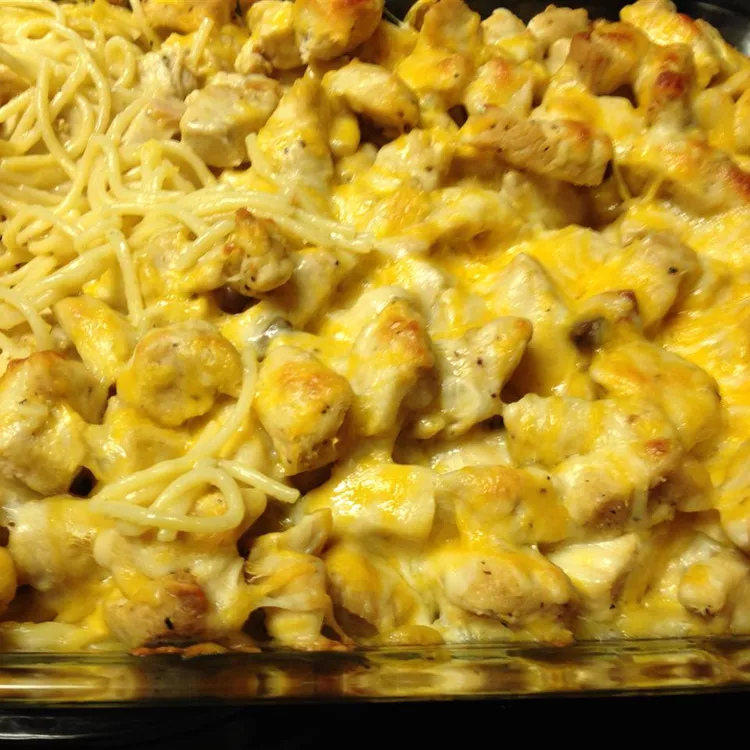

Southwest Chicken Salad

Description
A delicious recipe given to me by my sister, Ruth Clark. This is a favorite with my kids and their friends. The recipe is easy to double.
Ingredients
- 1 pound cooked and drained spaghetti
- 5 chicken breasts, cooked and cubed
- 2 (10.75 ounce) cans condensed cream of chicken soup
- 2 ¼ cups water
- ¼ cup butter
- 2 cubes chicken bouillon
- ¼ cup shredded Cheddar cheese
Steps
- Put cooked spaghetti into 9x13-inch baking dish. Place chicken on top of spaghetti.
- In medium saucepan heat together soup, water, butter, and bouillon. Bring to a boil and then pour over the pasta and chicken. Put shredded cheese (to taste) on top and press down a bit.
- Bake at 350 degrees F (175 degrees C) for 25 minutes.